Py Tools¶
VCollab provides PY Tools, a custom tools menu which comes with the installer. It can be accessed from the main menu.
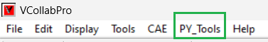Py Tools contains a set of utility functions which are associated with a set of python scripts. The description of association between each function name and corresponding Python script is to be defined in a specific format in a file <VCOLLAB_DIR>/VCollabProX/VCollabStdPyTools.csv.
#VCollab_Python_INTERFACE,
GUI Mode=0,
PY_Tools,
Report Views,%VCOLLAB_DIR%\VCollabProX\PYTools\PyTool_Scripts\ReportViews.py
Instance Browser,%VCOLLAB_DIR%\VCollabProX\PYTools\PyTool_Scripts\Instance_Browser.py
Set Legend,%VCOLLAB_DIR%\VCollabProX\PYTools\PyTool_Scripts\set_legend_Json.py
Find Hotspots,%VCOLLAB_DIR%\VCollabProX\PYTools\PyTool_Scripts\FindHotspots.py
Part Hotspots,%VCOLLAB_DIR%\VCollabProX\PYTools\PyTool_Scripts\PartHotspots.py
Hotspot Table,%VCOLLAB_DIR%\VCollabProX\PYTools\PyTool_Scripts\HotspotTable.py
Update Labels,%VCOLLAB_DIR%\VCollabProX\PYTools\PyTool_Scripts\Update_Labels.py
MinMax XYPlot,%VCOLLAB_DIR%\VCollabProX\PYTools\PyTool_Scripts\MinMaxXYPlot.py
Set SI Unit,%VCOLLAB_DIR%\VCollabProX\PYTools\PyTool_Scripts\setUNITS_SI.py
Arrange Models,%VCOLLAB_DIR%\VCollabProX\PYTools\PyTool_Scripts\ArrangeModels.py
Export CSV Result,%VCOLLAB_DIR%\VCollabProX\PYTools\PyTool_Scripts\ExportResults2CSV.py
Distance Plot,%VCOLLAB_DIR%\VCollabProX\PYTools\PyTool_Scripts\TrackDistPlot.py
Blank View,%VCOLLAB_DIR%\VCollabProX\PYTools\PyTool_Scripts\Blankview.py
View2Background,%VCOLLAB_DIR%\VCollabProX\PYTools\PyTool_Scripts\View2Background.py
Import Image Views,%VCOLLAB_DIR%\VCollabProX\PYTools\PyTool_Scripts\ImportImageViews.py
Video Maker,%VCOLLAB_DIR%\VCollabProX\PYTools\VideoMaker\Video_Make.py
Report Template Editor,%VCOLLAB_DIR%\VCollabProX\PYTools\CMD_Editor\VCTemplateEditor.py
CreateCAX (VMove Submit),%VCOLLAB_DIR%\VCollabProX\PYTools\VMoveSubmit_ParamsEditor\VMSubmit_ParamsGUI.py
The following set of functions are provided in this release.
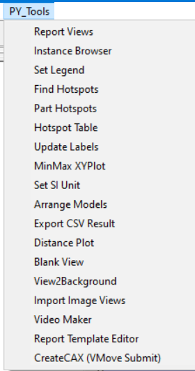Report Views¶
This function (script) creates a set of Viewpoints based on analysis type. For loadcase analysis (Linear/Transient), it creates Maximum Instance hotspot views for each result.
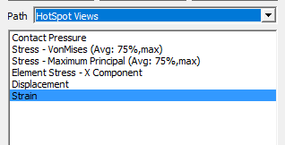 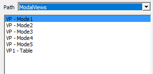For Modal Analysis, it asks user inputs as shown below and creates modal animation views with a Frequency Table view.

Instance Browser¶
This script reads all the instances for the active derived result type and creates a table as shown in the image below.
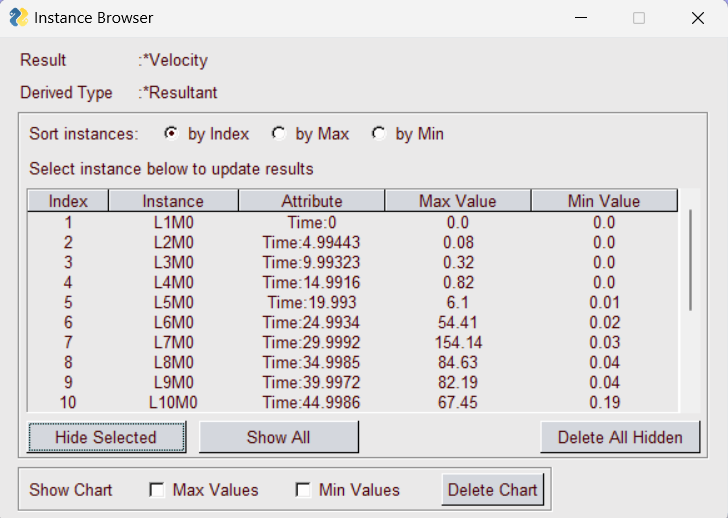Instances can be sorted by maximum or minimum value. User can select any row in table to display that instance. The Hide Selected button hides the selected row. Show All button can be used to show all rows including the hidden ones. Delete All Hidden deletes hidden rows and corresponding instances from the CAX. Table max/min values can be plotted in a graph by selecting the graph options.
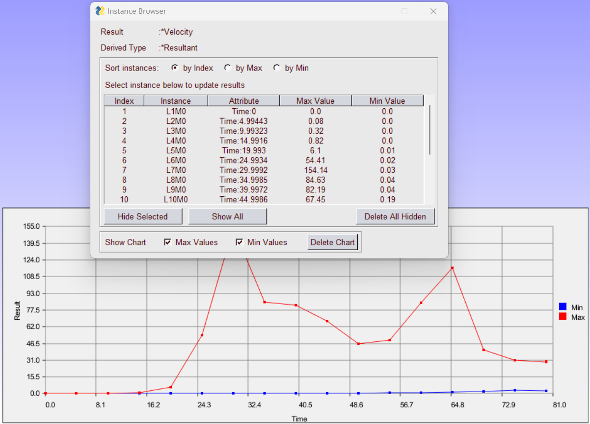{kind=link}
Set Legend¶
This script helps to easily modify the legend for the current plot. In the tab Legend Settings legend properties like Max-Min values, PreMax-PreMin values, Transperancy, Precision, etc. can be changed.

In the tab Save/Load Options, user can save current legend settings into a .json file. By default the location is same as Profile Path. User can enter a name in the Name field and click on Save to save current legend settings in the json file. Multiple such settings can be saved. All such saved settings are listed in the Saved Legends List. On selecting an item from the Saved Legends List, user can click Load and Apply to apply settings to the current display(current Model). The Delete button can be used to delete an item from the Saved Legends List.

If the same legend settings are to be applied to different ViewPoints, user can go to the VP Options tab, select a ViewPath from the dropdown and select multiple ViewPoints. On clicking Apply to VP(s), the current legend settings are applied to the selected ViewPoints. If result for the selected item does not match the result in selected ViewPoint, an error message will inform the user about the mismatch.

Set Result Range Params are model specific parameters. Example: Premin and Premax values for legend. User can select or unselect depending on the the model to which legend settings are applied. Same Result Type checkbox applies the legend settings only to same result type. Example: If the saved result type of saved legend settings is Displacement then the legend settings are applied only to displacement type results.
Find Hotspots¶
This script helps to automatically create hotspot notes according to user inputs. It takes user inputs for the currently displayed result and instance as shown below. In this dialog box user can specify:
Legend Max, Min values to highlight specific range of values
Option to filter parts and associated limit
Top/Bottom hotspot option (if Top checkbox is checked then top option is set, else bottom option)
Number of hotspots
When Apply button is clicked, hotspots are displayed based on user selected probe settings. If Filter Parts option is selected then the parts with result value outside the filter limits are hidden (filter limits top or bottom is set based on the hotspot option).
Part Hotspots¶
This script creates probes at minimum and/or maximum location for each individual parts that are currently displayed. The settings for finding hotspots in the Hotspot Settings dockable dialog such as the number of top and bottom hotspots, Zone Radius, etc. are followed. These are then applied to each visible part to create probes.
Hotspot Table¶
This script creates a 2D table with Node ID, Part ID, Position(X,Y,Z) and result value for the probed labels. User can also specify the location for the table.


Note
Use similar probe types (Derived or All result). It does not work for multi-model comparison tables.
Update Labels¶
This function updates all labels with latest label settings. User can update labels in the Current View or ALL VP (for all ViewPoints).

{kind=link}
Set SI Unit¶
This function sets Units (SI) for all common result types (Results Option Dialog). These are for display purpose only.

Arrange Models¶
This function arranges all merged models evenly spaced rows. If the CAX does not have multiple models, all visible parts (max. 25) are displayed in a grid.
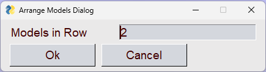
Export CSV Result¶
This function exports current result instance into a csv file. User can select either from parts or nodesets. The Nodesets tab is greyed out if no nodesets are defined. User can choose multiple results and instances. The results are saved in the CSV file. The Dump Option writes the CSV with the header #VCOLLAB_RESULTS_DUMP.
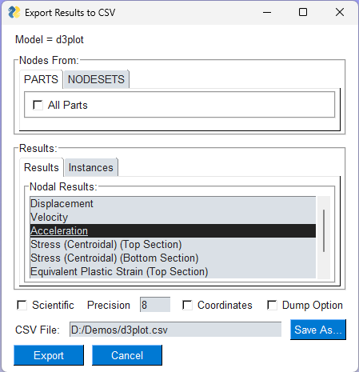 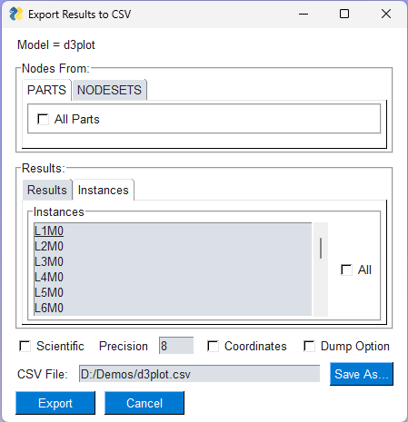Distance Plot¶
This function helps to find or trace the distance between any two nodes among all time steps. Clicking this item, an input dialog prompts for any two node IDs. Input dialog takes first two node ids from probe tables if they are available. Otherwise user has to enter the node IDs manually.

On clicking OK, an XYPlot with a single curve which represents the distance between given nodes is created.
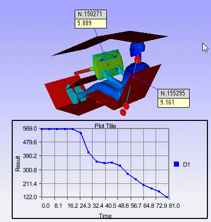Blank View¶
This function clears the viewer screen in a single click. i.e. it hides all the objects in the ViewPoint. Then the Set Plain background dialog asks user if plain white background is to be set.

View2Background¶
This function takes snap-shop of graphics area and sets that image as 2D background.
Import Image Views¶
This function asks for an image folder and adds background image ViewPoints for each image in the folder. User can create images from native post processor or CAD tools and then select this function. Another usecase is that user can export PowerPoint slides as images (png/jpeg) into a folder and then use this function to import all those images as 2D ViewPoints. Following folder selection dialog appears.

On selecting a folder, the dialog box updates to show all images found in the folder.

New ViewPoints are created with selected images set as background. Checking the ImageLabel sets the images as image lables instead of background images. The Plain BG option sets background to plain white.
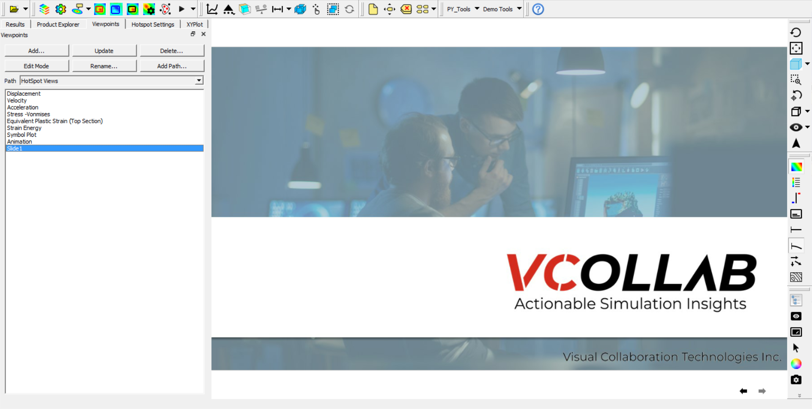{kind=link}
Video Maker¶
Animations can help to communicate complex geometric feature (Shape / Assembly / Joint / Connections), specific deformations or relative motion between parts and critical hotspot locations in a model. In general, a video should capture part movements, rotation of models or camera, sectional views and CAE animations. High quality animations are created by capturing many frames (images) and then stitching them together. It is a tedious time-consuming task to create these frames manually. To simplify this, a set of commands to capture images from different types of motions or animations is developed using VCollabPro Python API. A set of such commands can be used as a simple text-based template (Video Command Template) for creating videos. Video Template Editor is a GUI based tool to define, modify and run such video command templates.
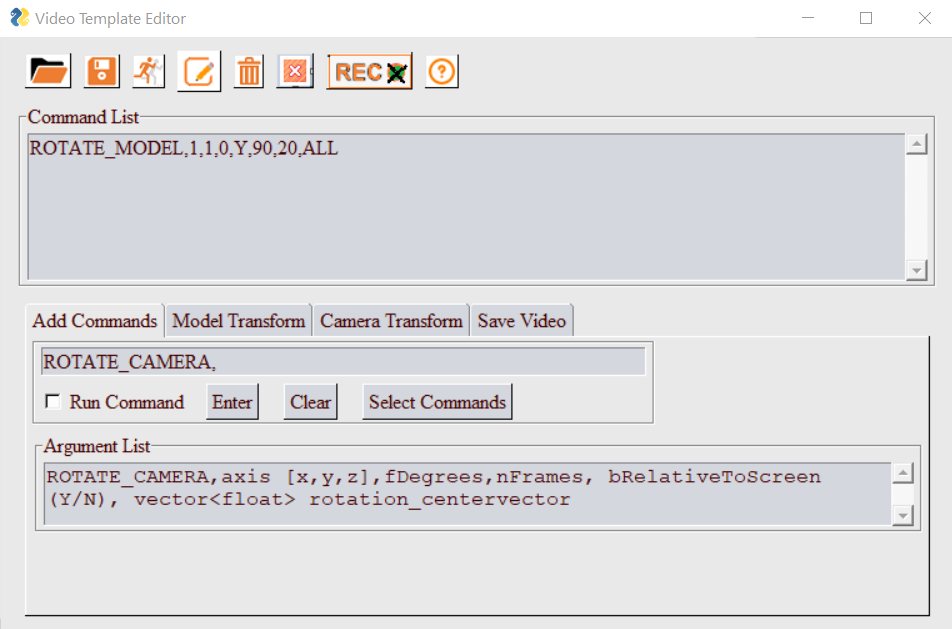{kind=link}
Report Template Edit¶
To simplify report automation task, a list of generic commands are developed using VCollabPro python API. A list of such commands (Report Template) can be defined in a text file and a script can create ViewPoints based on these commands. VCollab Report Template Editor is a GUI based tool to define, edit and run such commands or templates.

CreateCAX (VMove Submit)¶
VMoveCAESubmit is a tool to convert CAX file from a native CAE file based on the parameters specified in a txt file. This GUI tool is developed to simplify CAX file creation using VMoveCAESubmit. Using this tool user can select or specify list of commands or parameters for File, Result, Parts and Step sections and create VMoveCAESubmit parameter file. This Command parameter file can be run to create and load CAX file in VCollabPro.

Note
This PY Tools is for common utility functions (may be for company level customization). For user level customization, user can create same kind of csv file with user defined menu item names and corresponding scripts. Then copy the created csv and script files to the ‘%APPDATA%VCollab’. VCollab looks for any csv file with the proper header and creates the menu in the next application session.